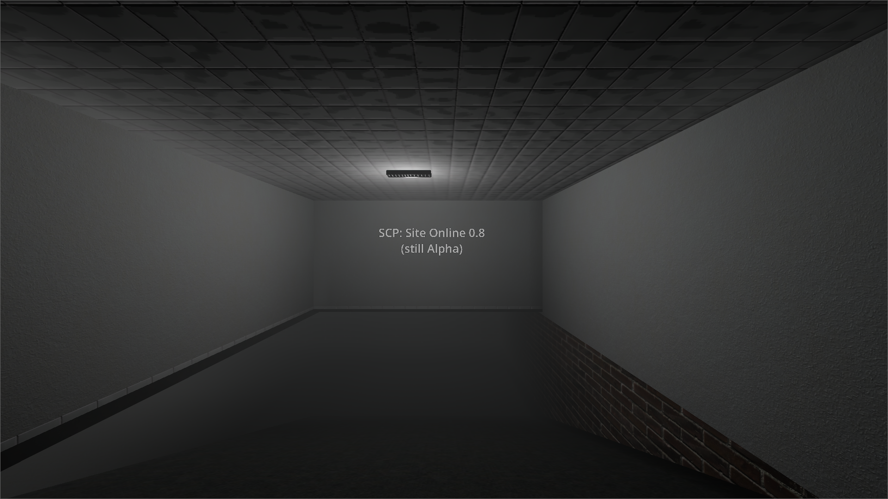
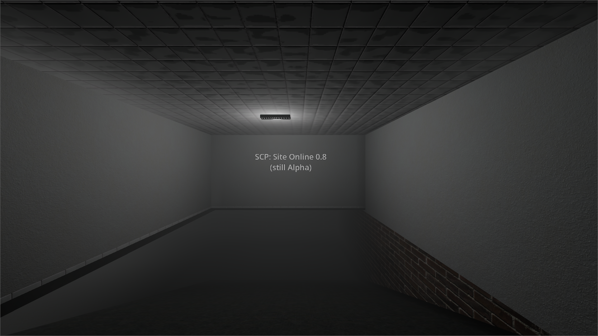

About the game.
The game is about Site-19. Currenly, the containment breach is happening. (Althrough there will be other gamemodes)
The game is about Site-19. Currenly, the containment breach is happening. (Althrough there will be other gamemodes)
